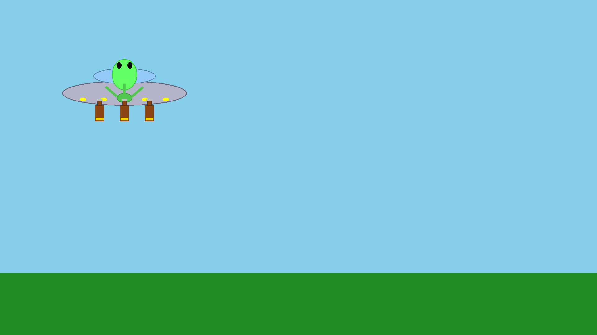
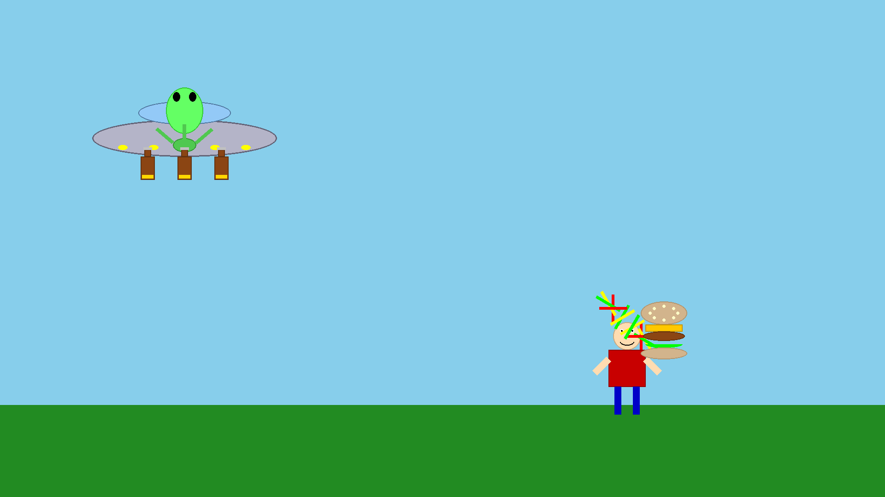
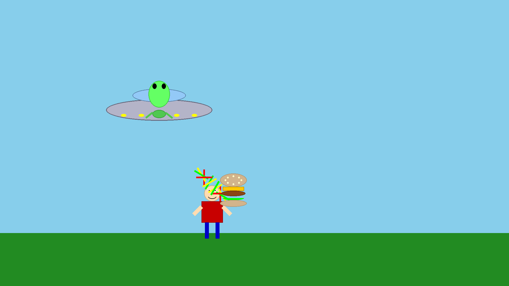
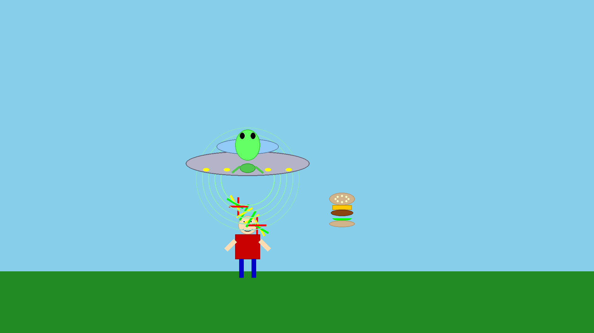
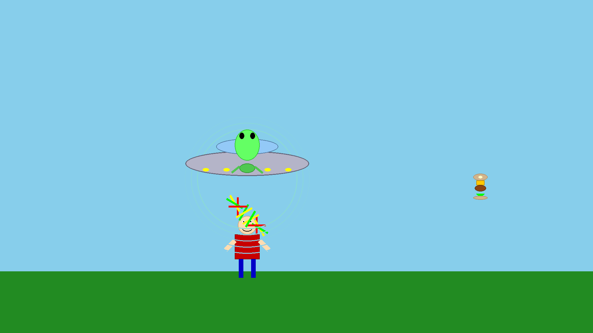
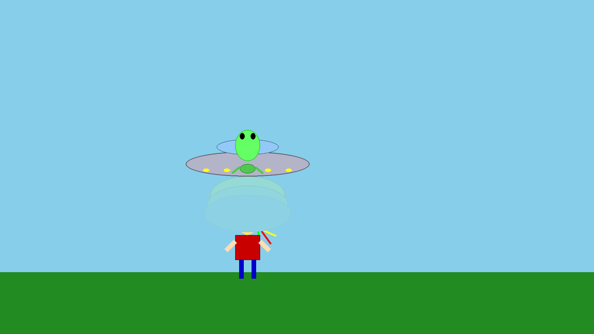

Alien Animation Test Frames
Full-HD (1920x1080) animation showing key moments from the 15-second story
Scene 1: Alien Drinking Beer (t=0s)

Alien sits in flying saucer, drinking from 3 beer bottles simultaneously
Scene 2: Human Walking (t=4s)

Human with Rastafari hair walks by carrying a large cheeseburger
Scene 3: Saucer Positioning (t=5.5s)

Flying saucer moves stealthily in front of human's head
Scene 4: Burp Effect (t=7s)

Alien releases massive burp with green expanding wave effect
Scene 4: Burger Flying (t=9s)

Cheeseburger flies 30 meters away in parabolic trajectory
Scene 5: Fart Tornado (t=12s)
Alien farts, causing greenish cloud and hair tornado effect begins
Scene 5: Hair Spinning (t=14s)

Rastafari dreads spin wildly like a tornado (nearly 2 full rotations)